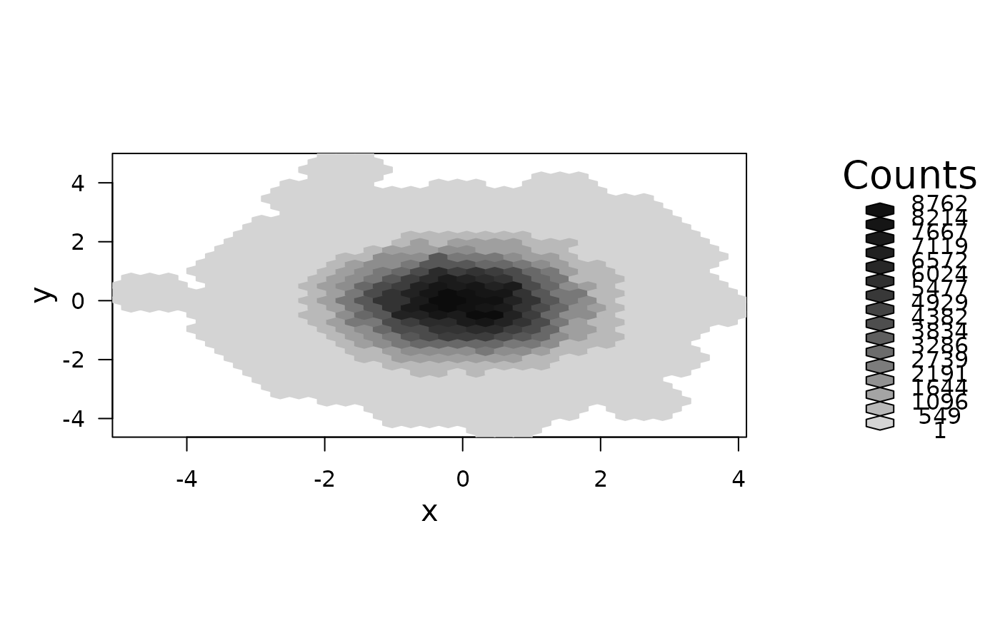
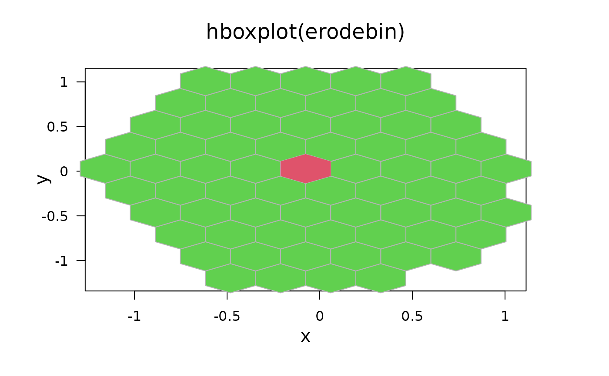
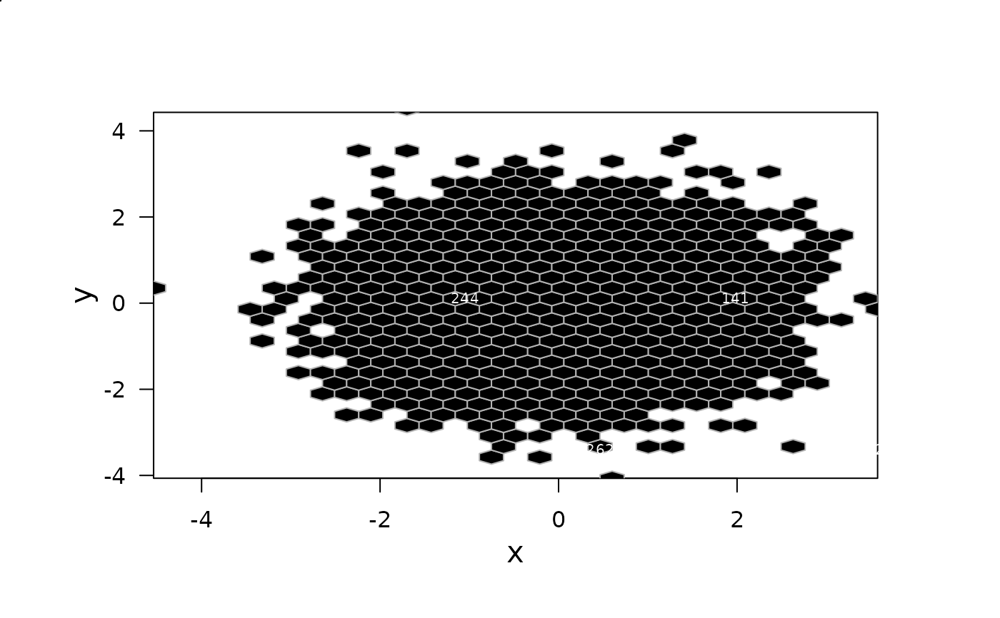

erode.hexbin.RdThis erosion algorithm removes counts from hexagon cells at a rate proportional to the cells' exposed surface area. When a cell becomes empty, algorithm removes the emptied cell and notes the removal order. Cell removal increases the exposure of any neighboring cells. The last cell removed is a type of bivariate median.
erode(hbin, cdfcut = 0.5)
erode.hexbin(hbin, cdfcut = 0.5)an object of class hexbin.
number in (0,1) indicating the confidence level for the limits.
An "erodebin" object (with all the slots from hbin) and
additionally with
high count cells and a component erode that gives the erosion order.
The algorithm extracts high count cells with containing a given fraction (cdfcut) of the total counts. The algorithm extracts all cells if cdfcut=0. The algorithm performs gray-level erosion on the extracted cells. Each erosion cycle removes counts from cells. The counts removed for each cell are a multiple of the cell's exposed-face count. The algorithm choses the multiple so at least one cell will be empty or have a count deficit on each erosion cycle. The erode vector contain an erosion number for each cell. The value of erode is
6*erosion_cycle_at_cell_removal - cell_deficit_at_removal
Cells with low values are eroded first. The cell with the highest erosion number is a candidate bivariate median. A few ties in erode are common.
set.seed(153)
x <- rnorm(10000)
y <- rnorm(10000)
bin <- hexbin(x,y)
smbin <- smooth.hexbin(bin)
erodebin <- erode.hexbin(smbin, cdfcut=.5)
plot(erodebin)

## bivariate boxplot
hboxplot(erodebin, main = "hboxplot(erodebin)")

# show erosion order
plot(bin,style= "lat", minarea=1, maxarea=1,
legend=FALSE, border=gray(.7))
grid.hexagons(erodebin,style= "lat", minarea=1, maxarea=1,pen="green")
xy <- hcell2xy(erodebin)
library("grid")
grid.text(lab = as.character(erodebin@erode), xy$x, xy$y,
gp = gpar(col="white", cex=0.65))
